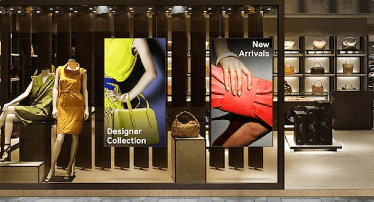
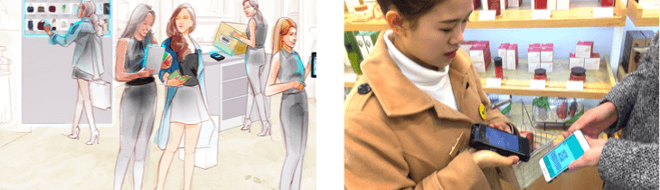
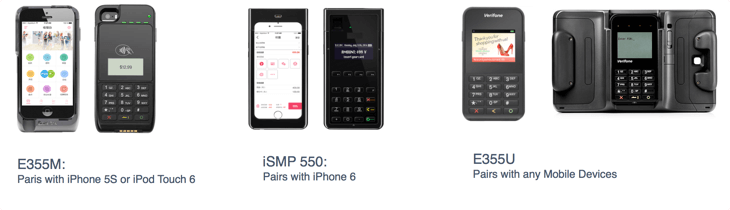
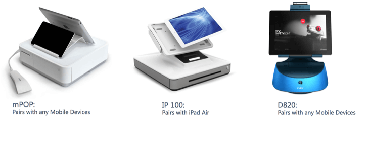

The Must-have In-Store Technologies in Digital Era - Mobile POS

• Turn an iPhone, iPod or iPad into a Smart Mobile POS
• Improve consumer retention and satisfaction
• Optimize store productivity and reduce the labor cost
• Increase sales revenue
• Fast and intutive check out
The relationship between retailers and consumers has considerably evolved. Consumers are looking for the best product, at the best price, with the highest level of service and through an innovative consumer experience. Consumers want to be involved in the purchase process. POSPi X-SHOP is the key to tomorrow’s retail success: liberty to purchase whenever or wherever the consumer chooses (in-store or out of-store) and from any device, liberty to compare prices, liberty to use social platform for shopping, liberty to choose the best store, liberty to pay wherever they are in the store etc...
To meet consumers changing needs, retailers are constantly extending sales channels and diversifying consumer touch points. Evolving store formats (express, convenience, hypermarket, e/m-commerce, MOTO...) & environments (multi-lane, dedicated check-out, self-service, in-store mobility, drive-in, store picking, home delivery, social networks...) create opportunities to reinvent the relationship with consumers.

With Retail in mind, POSPi has built its offer, to match the expansion of its retail customers, market demand and new consumer trends. POSPi provides innovative mobile technology solutions to enable retailers to step into smart retailing era of the future.

Retailers of all sizes rely on POSPi for enterprise-class mobile point of sale and cloud-based solutions that enhance customers' in-store experience and integrate various parts of store operations. POSPi is leading the retail mobility journey to deliver the innovation in-store that’s measurable in increased sales revenue, improved customer satisfaction and lasting loyalty. The customers who has innovation in heart

Our customer are taking the initiative, embracing the technology, engaging today’s tech-savvy shoppers by delivering on their hyper-smart shopping expectations
"We attach great importance to the customers' satisfaction, and Mobile POS allows us to offer personalized and high-standard service to our customers at retail stores. Each of our salespersons is now equipped with a Mobile POS which has successfully eliminated queuing and empowered them to respond to customers' various requests anywhere, anytime on the floor." - CaiJIanren GM of innisfree Sources from : cosmeticsdesign-asia.com/Business-Financial/Innisfree-collaborates-with-POSPi-and-Bank-of-China-to-launch-mobile-payment-in-China
In-Store Mobile is easier than you think. You can do it sooner than you’d hoped. POSPi Can Help